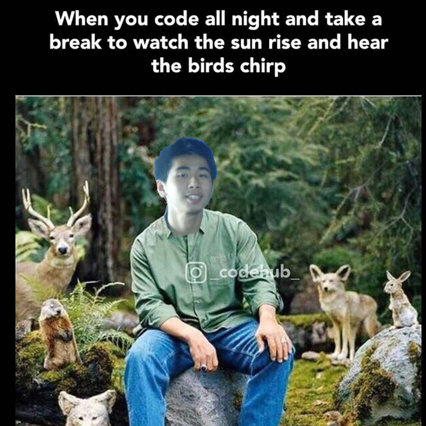

Welcome!
This is our this 10x engineer winner!
🎉🎉🎉🥳🥳🥳
Congratulations to Albert!
Albert has infinite patience and superhuman work ethic.
He truly exemplifies every element of Xendit culture but he is super humble,
unfailingly kind,
and always willing to help others with anything they need. Yang Yang
A lot of people ask me why I have
as my status, well... only those who know knows.
If you want to know you need to know and to know you need to
He's Xendit's secret weapon, he's there in the shadows delivering without fail.
He's an inspiration to us all. All hail Albert! Umar Rasydan
Albert is truly a great person - always willing to help and assist anyone in the team.
His enthusiasm and passion for what he is doing is very contagious
that it inspires the whole team. Really grateful to be working alongside him Jon Trinidad
I used to believe, 10x Engineer doesn't exist like what this website say, http://10x.engineer
.
But then, I met Albert, the myth version of the engineers.
Who can do every 1x Engineer does, and can beyond that.
He help everybody and doesn't care about himself.
An engineer only exist on fairy tale, but it's real. And it's on Xendit.
And now I can proudly say that I'm the first person in the world who found 10x engineer, named Albert! Iman Tumorang - The first man who found 10x Engineer in the world
Having testing sessions with all the members of the team.
Working with team members to debug their code.
Creating multiple pipelines and implementing tools to increase developer productivity
Highly effective communicator and coordinator. Shaun Yee - Digipay Engineer
Albert is always ready to help with whatever the team needs,
even if it means diverging from his already tight schedule.
He cares about the team when he’s constantly asking us to sleep,
even when he doesn’t sleep enough. Joseph Niel Tuazon - Direct Debit Engineer
Albert always there to help (even on weekends).
Also always try to automate everything, so everything flows easier and faster.
And he doesn’t really need sleep Brian - Digipay Engineer